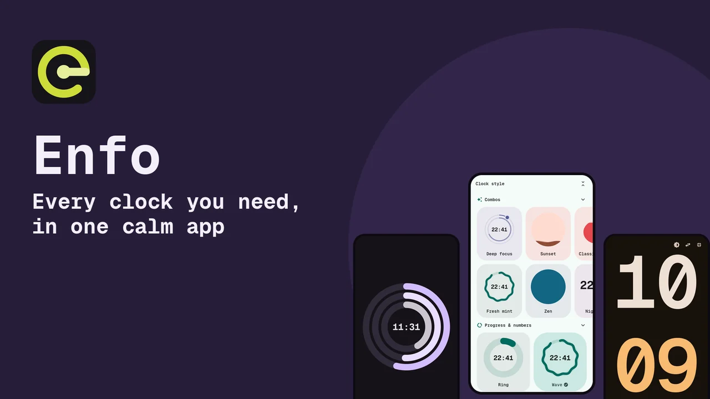

Clock & timer toolbox
Every kind of time, in one flat, calm app.
Enfo began as a Pomodoro timer. Now it is 16 tools, from timers and alarms to breathing, sleep cycles and lo-fi music, drawn in 63 clock styles that follow your color.
- 16 tools
- 63 clock styles
- 9 languages
- 9 Android widgets
Pick a color: the whole page re-themes, just like the app.
In your pocket
See it in motion
Real screens from the app, for phone and tablet. Every screen is flat: tone, shape and motion do the work.
A lowercase e drawn as a timer ring: the crossbar is the clock hand.
ZIP, 28 MB: logo (SVG and PNG), cover banners, Play graphics, screenshots in every size and the promo videos.

Why Enfo
Small on the surface, deep underneath
Honest note: Enfo has no ads, no account and no sign-in. The support page in the app has a one-time donation through Google Play and a tip jar if you would rather chip in.
16 tools
One app, sixteen ways to spend time well
Six tools are on from the start; the other ten are one tap away in the Modes menu. Try the live demos below (they are silent and run only in your browser).
63 clock styles · 60 combos
Your timer can look like anything
Rings, waves, pies, dials, gauges, spirals, digits, flowers, gears. A combo pairs a style with a color in one tap. Here are a few of them, alive; scrub the time and shuffle.
Material You, flat
One color in. A whole tonal palette out.
Pick an accent and Enfo derives every surface, container and text color from it, in light and dark. No borders, no shadows, no gradients: selection is a shape that morphs from circle to squircle.
Responsive
From a watch-sized window to a TV
One adaptive layout: a column on phones, a dial with a side panel on wide screens, master-detail settings on tablets, and everything focusable for keyboards and remotes.
Layouts are tested at watch, phone, tablet, TV and desktop sizes. Enfo is published for Android, Windows and Linux; separate Wear OS or Android TV store listings do not exist yet.
Keyboard & remote
Fully drivable without touching the screen
Arrow keys or a remote's D-pad move focus, Enter or OK presses. These shortcuts do the rest. Press ? or F1 in the app for this list.
9 languages
Speaks your language
Pick it in onboarding or Settings. City names in the World clock are still English and Spanish only. This site is available in English and Spanish.
Android widgets
Nine Material You widgets
Clock, analog clock, Pomodoro, timer, stopwatch, alarms, world clock, music and focus. The Pomodoro and timer widgets are drawn in the clock style you picked.
Free to download
Descargar Enfo · Download Enfo now
Get it on Android from Google Play, or grab the latest Windows and Linux builds from GitHub Releases.
Build from source
You need the Flutter SDK. Clone the repo, run flutter pub get and flutter run; no extra secrets or API keys are needed.
Linux also needs the libnotify development package (for example libnotify-dev on Debian/Ubuntu).
Privacy
What Enfo does with your data
Music credits
14 lo-fi songs, properly credited
All songs come from Wikimedia Commons, re-encoded to Ogg Vorbis. Ten are CC0; four are CC BY and require the credits below.
FAQ